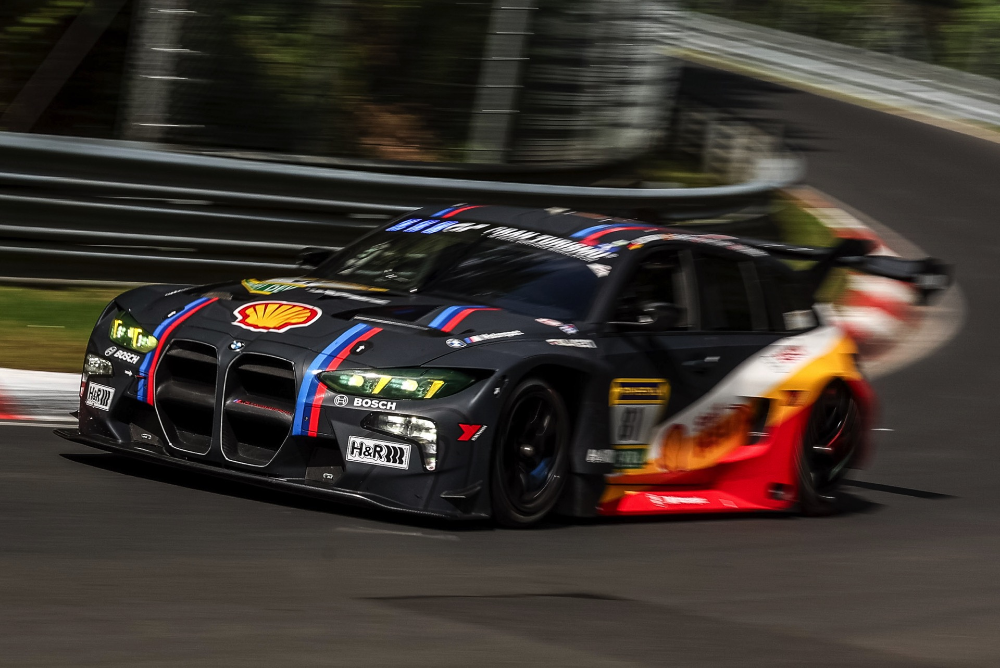
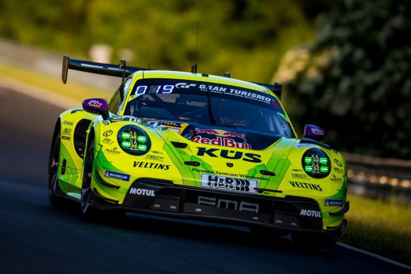

De Visie: Van Sim & Kart naar het Echte Circuit
Ik ben 15 jaar en mijn doel staat vast: een complete transitie maken naar de fysieke motorsport. Door middel van intense simulatietraining, karting, technische zelfstudie en discipline bouw ik stapsgewijs mijn weg op naar echte race- en rallywagens. Dit is mijn strategische routekaart.
Fase 1: De Fundering Leggen (Nu - Heden)
Snelheid en wagenbeheersing beginnen bij de basis. Dit is waar ik momenteel elke dag mijn techniek aanscherp:
🏁 Competitief Sim Racing
Bij sim racing train ik op telemetrie, racelijnen, bandenmanagement en race-craft in endurance kampioenschappen zoals Top Grid Season II. Dit is mijn digitale leerschool.
🏎️ Fysieke Karting
Ik behandel elke karting race en sessie als een schooldag, elke keer focus ik op 1 of 2 dingen om te verbeteren. Na afloop kijk ik kort wat goed ging en wat beter kan, zodat ik elke sessie sneller en slimmer word.
Fase 2: Toetreding Circuit
Zodra de leeftijd en de budgetten het toelaten, verleg ik de grens naar echte auto's:
🚗 Track Days & Grip Racing
Instappen in betaalbare circuitwagens om remzones, gewichtsverplaatsing en racen op iconische circuits in het echt onder de knie te krijgen.
Droom wagens voor het Circuit
Dit zijn echt droomauto's die ik alleen maar kan krijgen door veel sponsors:
BMW M3 Touring 24h

Ik ben misschien een beetje “biased”, maar de #81 auto van de 24h Nürburgring heeft op mijn post gereageerd en we zijn nu zelfs met elkaar in contact.
Porsche 911 GT3 R

Ik ben misschien een beetje beïnvloed door rijders zoals Kevin Estre, maar vooral door hoe sterk en constant deze auto is in endurance racing. Het is voor mij echt een perfecte mix van snelheid, controle en betrouwbaarheid.
Fase 3: De Ultieme Motorsport Doelen (Pro-Am)
Mijn dromen stoppen niet bij een glanzende circuitdag; ik wil de zwaarste en meest intense disciplines ter wereld beheersen:
🌲 Rallying (De Ultieme Test)
Rally rijden vraagt om blindelings vertrouwen, improvisatie en brute controle op wisselende ondergronden zoals gravel, modder en asfalt. Voor mij is dit de puurste vorm van motorsport.
🏆 Endurance & Pro-Am Racing
Deelnemen aan echte endurance-races en doorgroeien in de Pro-Am klasses. Constante rondetijden rijden onder hoge druk, uren achter elkaar.
Motorsport DNA
Mijn aanpak om deze doelen te bereiken is gebaseerd op data, content en mechanische passie: